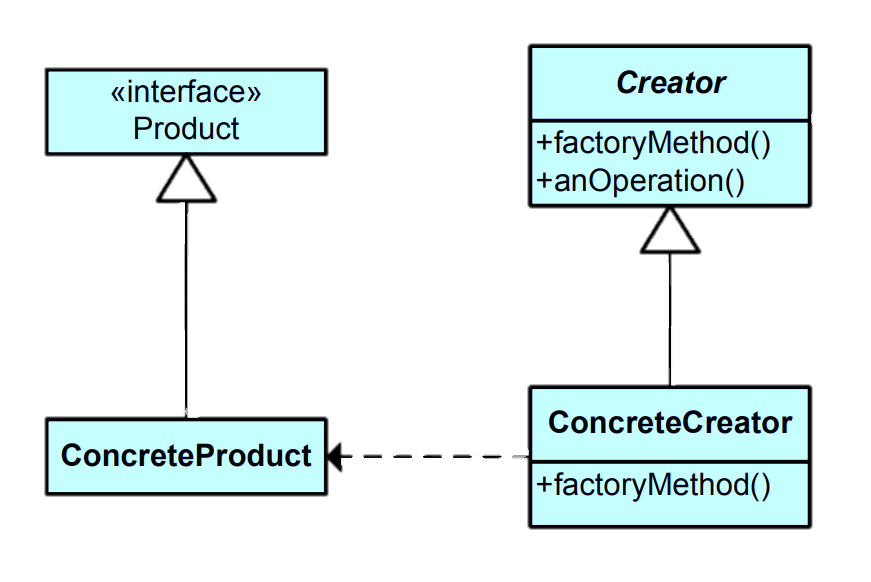

The Factory Method pattern is a design pattern in software engineering that provides an interface for creating objects but allows subclasses to alter the type of objects that will be created. It's one of the creational patterns and is used to promote loose coupling in code by abstracting the object creation process.Learn more.
Key Characteristics
Key characteristics of the Factory Method pattern include:
Abstraction of Object Creation: The pattern introduces an abstract factory method in a base class or interface. This method declares how objects are created, but it does not provide a concrete implementation.
Subclass Responsibility: Concrete subclasses of the base class or interface implement the factory method to create specific instances of objects. This allows subclasses to control the instantiation process and the type of objects created.
Decoupling: The Factory Method pattern promotes loose coupling between the creator (client code) and the concrete products (objects to be created). The client code depends on the factory method interface rather than directly on concrete product classes.
Extensibility: New product classes can be introduced by creating new concrete subclasses of the factory method creator without modifying existing client code.
Dependency Inversion: The Factory Method pattern adheres to the Dependency Inversion Principle by allowing higher-level modules (client code) to depend on abstractions (factory method interfaces) rather than concrete implementations.
Class Diagram

Example
Let's consider a software scenario where you're developing a UI framework. You have a base class UIElement that represents various user interface elements like buttons, text boxes, and checkboxes. Each type of UI element needs to be created by a corresponding factory class.